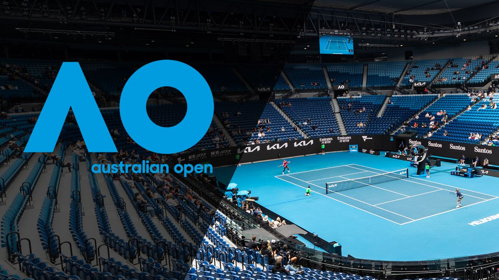
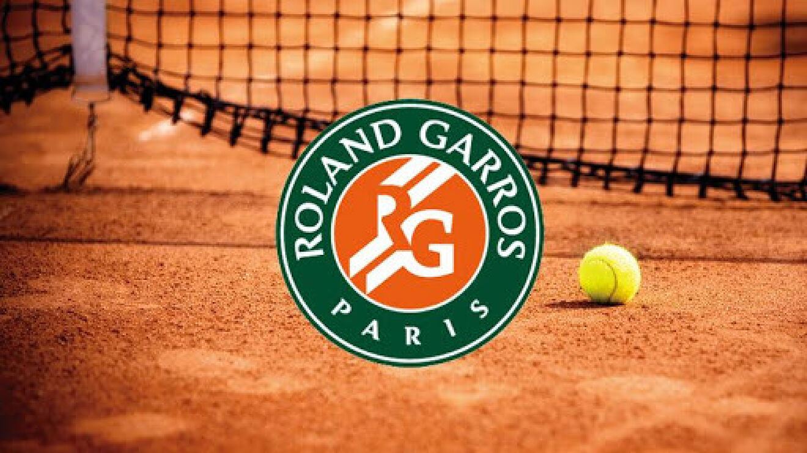
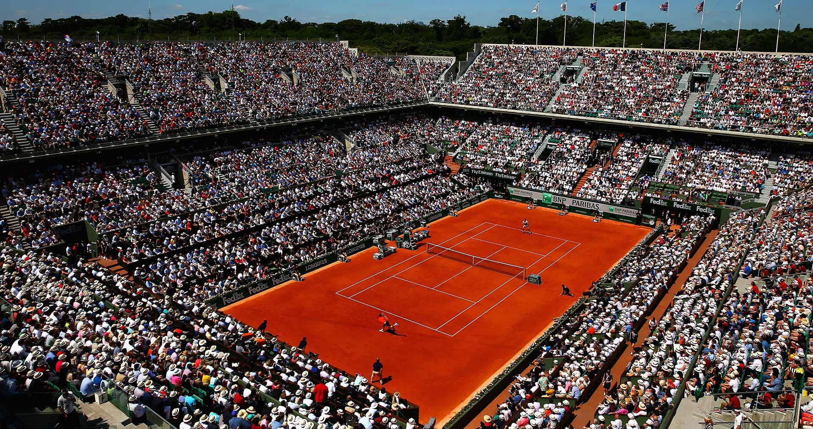
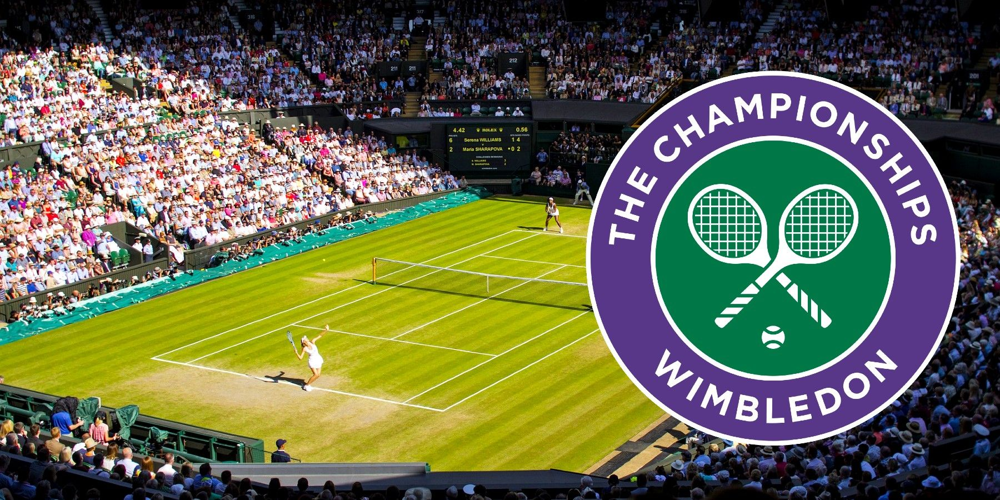
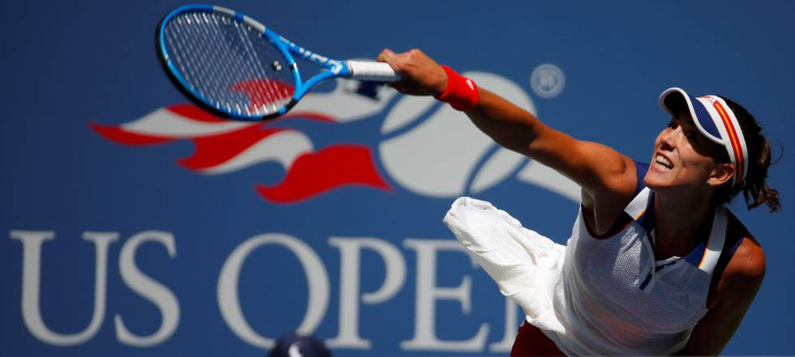

El Grand Slam de tenis está constituido por los cuatro torneos oficiales mayores del circuito internacional organizados por la Federación Internacional de Tenis, siendo los siguientes: Abierto de Australia - Dura o cemento Roland Garros - Polvo de ladrillo, tierra batida o arcilla Wimbledon - Césped, hierba o pasto Abierto de Estados Unidos - Dura o cemento Estos cuatro torneos se disputan anualmente al mejor de cinco sets cada partido en categoría masculina, con un cuadro de 128 jugadores —a diferencia de los Masters 1000, que se disputan al mejor de tres sets, con un cuadro de 96 o 56 jugadores—, y al mejor de tres sets en categoría femenina, también con un cuadro de 128 jugadoras.
El Abierto de Australia es cronológicamente el primero de los cuatro torneos oficiales que forman el Grand Slam de tenis. Tiene lugar cada mes de enero en el complejo deportivo situado en Melbourne Park, en la ciudad de Melbourne. El torneo fue creado en el 17 de noviembre de 1905. Desde 1927 pasó a denominarse "Campeonato de Australia", y en 1968, año en el que se implantó la era open y se permitió la participación de jugadores profesionales en el torneo, cambió su nombre a "Abierto de Australia".
 El Abierto de Francia, conocido habitualmente como Roland Garros, es un torneo oficial de tenis que conforma el Grand Slam, jugado desde 1891. Es el principal torneo celebrado sobre tierra batida en el mundo y el segundo en orden cronológico de los Grand Slams tras el Abierto de Australia. Es a su vez el predecesor del Campeonato de Wimbledon y del Abierto de Estados Unidos y único de los cuatro grandes torneos celebrado sobre esta superficie.
El Campeonato de Wimbledon es un torneo oficial de tenis organizado por el All England Lawn Tennis and Croquet Club, que se lleva a cabo en junio/julio en Wimbledon, Londres, Inglaterra, Reino Unido desde el año 1877. Es el certamen de tenis más antiguo y a la vez el más prestigioso, además es el tercer torneo de Grand Slam que se juega en el año, precedido por el Abierto de Australia y Roland Garros, y seguido por el Abierto de Estados Unidos. El torneo se disputa en césped como superficie, siendo el único de su categoría en hacerlo.

El Abierto de Estados Unidos (en inglés, US Open) es cronológicamente el cuarto y último torneo oficial de Grand Slam de tenis de la temporada. Se disputa anualmente entre agosto y septiembre, en cinco modalidades: individuales de hombres y mujeres, dobles de hombres y mujeres y dobles mixtos. Desde 1978, el torneo se disputa en el USTA Billie Jean King National Tennis Center (renombrado así en 2006), en Flushing Meadows, Nueva York.